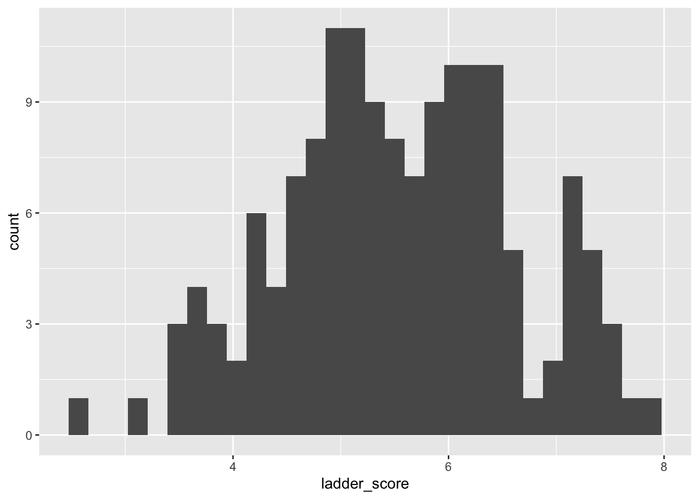
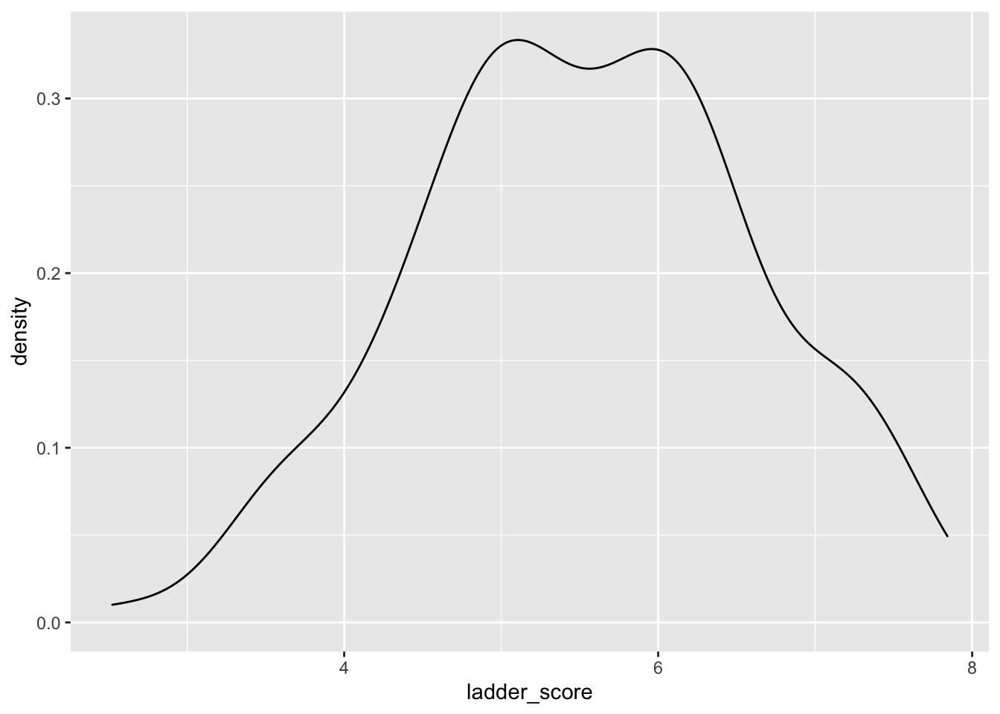
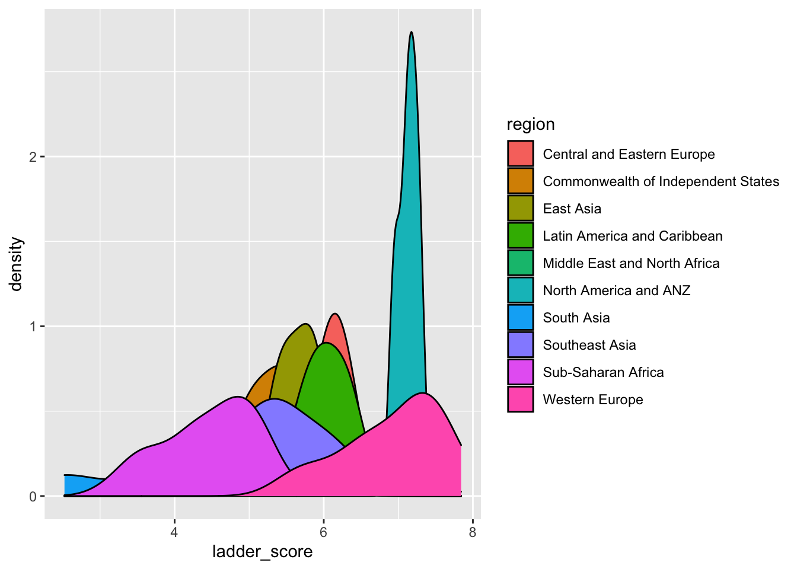
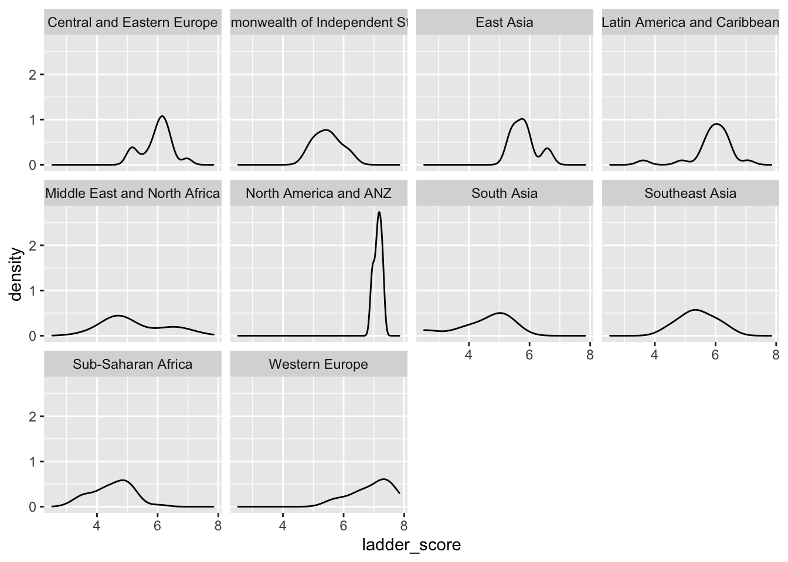

1 Analysing the World Happiness Report
In this exercise, you will apply what you’ve learned in class to perform exploratory data analysis (EDA) on the World Happiness Report and make some pretty plots.
This dataset was downloaded from the website Kaggle. We will use the 2021 data in this exercise. This dataset is stored in an object called happy_full
In this exercise, you will practice:
- gaining quick insight into the type of data this dataset contains
- using functions from the Dplyr package to wrangle your data and obtain useful summaries
- making pretty plots!

2 Selecting variables
The happy_full dataset contains many variables. This gives us the chance to practice our select()-ing skills!
Simple selects
Let’s warm up by performing some basic select operations
How would you select just the columns region and ladder_score?
Code:
happy_full %>%
select(region, ladder_score)
| region | ladder_score |
|---|---|
| Western Europe | 7.842 |
| Western Europe | 7.620 |
| Western Europe | 7.571 |
| Western Europe | 7.554 |
| Western Europe | 7.464 |
| Western Europe | 7.392 |
3 Slightly-more-difficult selects
Let’s try something more challenging now. Select all variables that do not have underscores in their names
Code:
happy_full %>%
select(!contains("_"))
| region | upperwhisker | lowerwhisker | generosity |
|---|---|---|---|
| Western Europe | 7.904 | 7.780 | -0.098 |
| Western Europe | 7.687 | 7.552 | 0.030 |
| Western Europe | 7.643 | 7.500 | 0.025 |
| Western Europe | 7.670 | 7.438 | 0.160 |
| Western Europe | 7.518 | 7.410 | 0.175 |
| Western Europe | 7.462 | 7.323 | 0.093 |
4 Plotting distributions
Now we move to the fun part - making pretty plots! Let’s begin by getting a sense of the overall distribution of ladder_score in happy_select
Code:
happy_select %>%
ggplot(aes(ladder_score)) +
geom_histogram()

5 Making improvements
This plot is fine, but it’s a little chunky. Let’s try a different geom - geom_density() - to see what we get
Code:
happy_select %>%
ggplot(aes(ladder_score)) +
geom_density()

6 Density by region
What does the ladder_score distribution look like for each region? There are many ways to visualize this. Let’s first plot all the distributions on one plot
happy_select %>%
ggplot(aes(ladder_score, fill = region)) +
geom_density()

7 Faceting
Nice! One small problem with this plot is that distributions are overlapping, making it difficult to visualize everything. Which argument can you adjust to improve this plot? Does it go within aes() or outside? Why?
Let’s consider an alternative way to plot the distributions. Go ahead and use the facet_wrap() function to do this
happy_select %>%
ggplot(aes(ladder_score)) +
geom_density() +
facet_wrap(~region)

8 Shiny test
happy_select %>%
ggplot(aes(ladder_score)) +
geom_density()9 Shiny test two
## PhantomJS not found. You can install it with webshot::install_phantomjs(). If it is installed, please make sure the phantomjs executable can be found via the PATH variable.